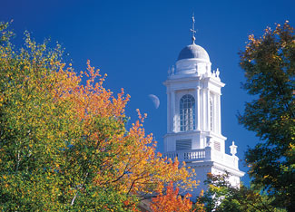

If Maine brings to mind clean air, rambling moose, pristine countryside and fresh lobster, Bethel scores on three of those: The lobster has to come from the coast.
Bethel residents enjoy the outdoors that surrounds them. For summer recreation, the Appalachian Trail is not far away, but many hikers are just as excited about the hiking and backpacking trails in the White Mountain National Forest and the Grafton Loop, a scenic 42-mile backpacker’s dream. Canoe and kayak races are a familiar sight on the Androscoggin River - which is no longer one of the country’s most polluted waterways thanks to cleanup efforts by federal, state and municipal agencies - so are anglers pulling 6-pound rainbow trout out of the water.
Ski magazine called it “the greatest ski town in the universe,” because both the skiing and the village life are world-class. In the hills and valleys surrounding Bethel are 62 miles of groomed Nordic ski trails, and even dog sled teams for hire. Bethel recently celebrated its abundant snow with a world-record snowwoman (122 feet tall, 13 million pounds).
Festivals such as the Harvest Fest feature the products of locals such as John Carter. This seventh generation farmer/rancher practices rotational cattle grazing that mimics the nomadic grazing habits of bison and moose, preventing soil erosion and habitat destruction.
Population: 2,640
Median House Price: $120,400
Climate: Cold winters, cool summers. January average: 17 degrees; July average: 68 degrees.
Natural Assets: Elevation: 665 feet; White Mountains, Grafton Loop Trail for hiking, Androscoggin River for great fishing and paddling.
Sustainability Initiatives: Strong emphasis on local food; restoration and preservation of regional trails; native landscaping on town trails.
Check out the other towns on our 2009 list of Great Places You’ve Never Heard Of.
|
 DEAN ABRAMSON The fall colors of Maine are world-famous. |
|
|